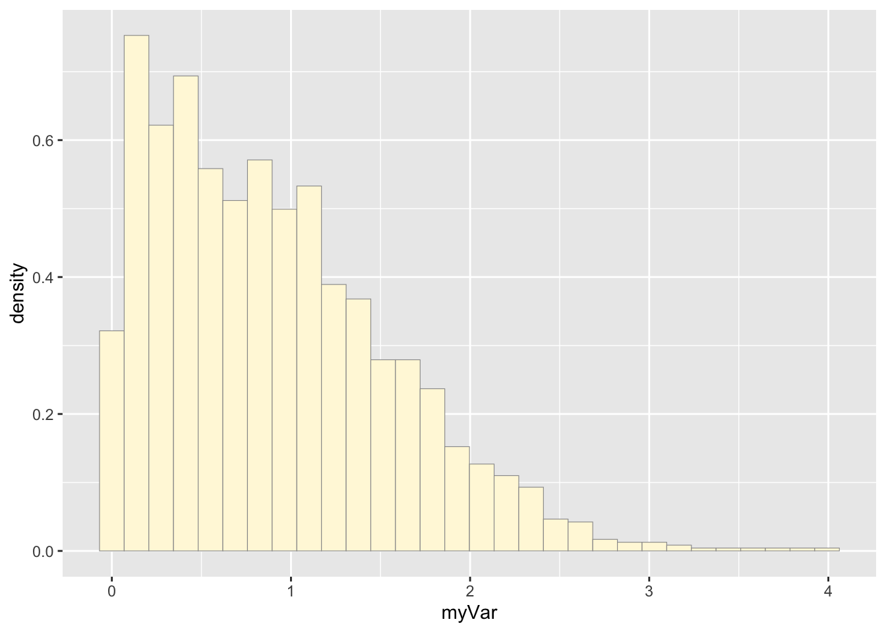
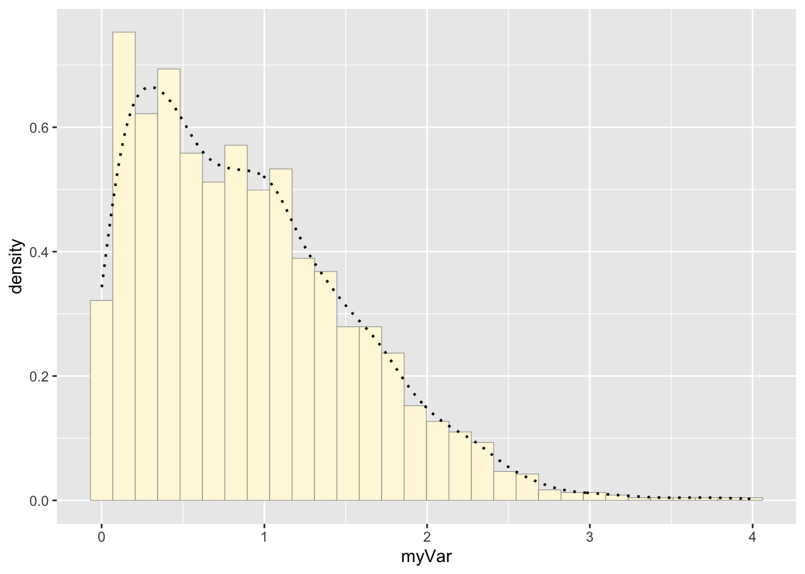
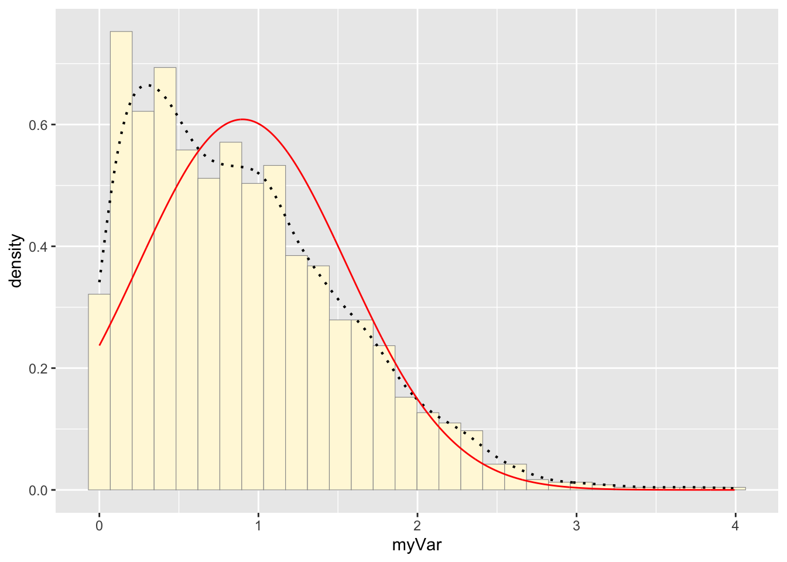
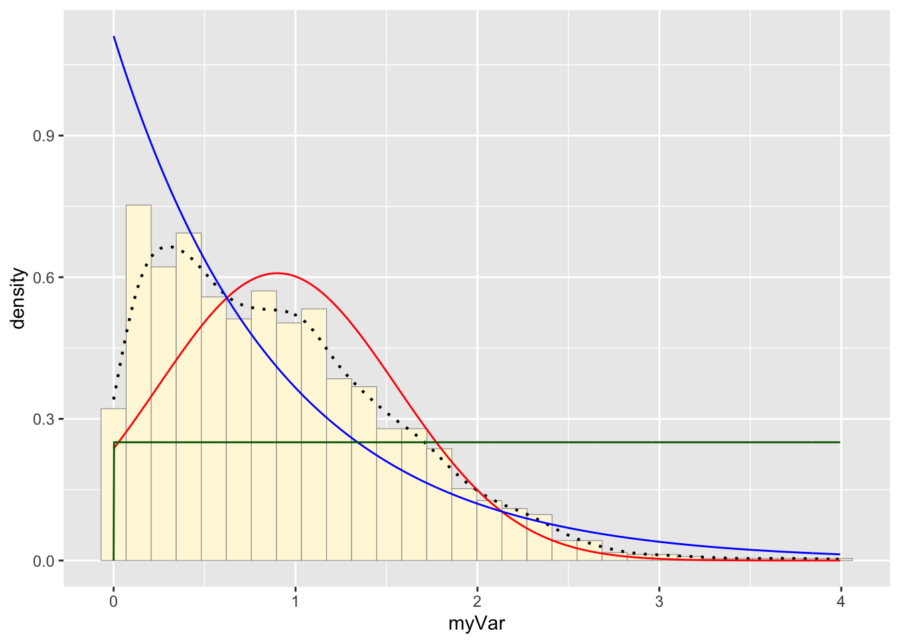

Homework 8 Notes
Audrey Commerford
2025-03-19
Simulating and Fitting Data Distributions
Open Libraries
library(ggplot2) # for graphics
library(MASS) # for maximum likelihood estimationRead in Data Vector
To illustrate, we will generate some fake data here:
# quick and dirty, a truncated normal distribution to work on the solution set
z <- rnorm(n=3000,mean=0.2)
z <- data.frame(1:3000,z)
names(z) <- list("ID","myVar")
z <- z[z$myVar>0,]
str(z)## 'data.frame': 1707 obs. of 2 variables:
## $ ID : int 3 4 8 9 10 11 13 14 18 24 ...
## $ myVar: num 2.323 0.834 1.372 1.624 0.49 ...summary(z$myVar)## Min. 1st Qu. Median Mean 3rd Qu. Max.
## 0.001466 0.363659 0.730554 0.864909 1.209290 4.449736In the third step of this exercise, you will substitute in your own data for this fake data set. But for now, use the code chunks below to see how you fit different statistical distributions to a vector of observations, and then estimate the maximum likelihood parameters for each distribution.
Plot histogram of data
Plot a histogram of the data, using a modification of the code from lecture. Here we are switching from qplot to ggplot for more graphics options. We are also rescaling the y axis of the histogram from counts to density, so that the area under the histogram equals 1.0.
p1 <- ggplot(data=z, aes(x=myVar, y=..density..)) +
geom_histogram(color="grey60",fill="cornsilk",size=0.2)
print(p1)## `stat_bin()` using `bins = 30`. Pick better value with
## `binwidth`.
Add empirical density curve
Now modify the code to add in a kernel density plot of the data. This is an empirical curve that is fitted to the data. It does not assume any particular probability distribution, but it smooths out the shape of the histogram:
p1 <- p1 + geom_density(linetype="dotted",size=0.75)
print(p1)## `stat_bin()` using `bins = 30`. Pick better value with
## `binwidth`.
Get maximum likelihood parameters for normal
Next, fit a normal distribution to your data and grab the maximum likelihood estimators of the two parameters of the normal, the mean and the variance:
normPars <- fitdistr(z$myVar,"normal")
print(normPars)## mean sd
## 0.86490914 0.64573798
## (0.01562930) (0.01105159)str(normPars)## List of 5
## $ estimate: Named num [1:2] 0.865 0.646
## ..- attr(*, "names")= chr [1:2] "mean" "sd"
## $ sd : Named num [1:2] 0.0156 0.0111
## ..- attr(*, "names")= chr [1:2] "mean" "sd"
## $ vcov : num [1:2, 1:2] 0.000244 0 0 0.000122
## ..- attr(*, "dimnames")=List of 2
## .. ..$ : chr [1:2] "mean" "sd"
## .. ..$ : chr [1:2] "mean" "sd"
## $ n : int 1707
## $ loglik : num -1676
## - attr(*, "class")= chr "fitdistr"normPars$estimate["mean"] # note structure of getting a named attribute## mean
## 0.8649091Plot normal probability density
Now let’s call the dnorm function inside ggplot’s
stat_function to generate the probability density for the
normal distribution. Read about stat_function in the help
system to see how you can use this to add a smooth function to any
ggplot. Note that we first get the maximum likelihood parameters for a
normal distribution fitted to thse data by calling
fitdistr. Then we pass those parameters
(meanML and sdML to
stat_function):
meanML <- normPars$estimate["mean"]
sdML <- normPars$estimate["sd"]
xval <- seq(0,max(z$myVar),len=length(z$myVar))
stat <- stat_function(aes(x = xval, y = ..y..), fun = dnorm, colour="red", n = length(z$myVar), args = list(mean = meanML, sd = sdML))
p1 + stat## `stat_bin()` using `bins = 30`. Pick better value with
## `binwidth`.
Notice that the best-fitting normal distribution (red curve) for these data actually has a biased mean. That is because the data set has no negative values, so the normal distribution (which is symmetric) is not working well.
Plot exponential probability density
Now let’s use the same template and add in the curve for the exponential:
expoPars <- fitdistr(z$myVar,"exponential")
rateML <- expoPars$estimate["rate"]
stat2 <- stat_function(aes(x = xval, y = ..y..), fun = dexp, colour="blue", n = length(z$myVar), args = list(rate=rateML))
p1 + stat + stat2## `stat_bin()` using `bins = 30`. Pick better value with
## `binwidth`.Plot uniform probability density
For the uniform, we don’t need to use fitdistr because the maximum likelihood estimators of the two parameters are just the minimum and the maximum of the data:
stat3 <- stat_function(aes(x = xval, y = ..y..), fun = dunif, colour="darkgreen", n = length(z$myVar), args = list(min=min(z$myVar), max=max(z$myVar)))
p1 + stat + stat2 + stat3## `stat_bin()` using `bins = 30`. Pick better value with
## `binwidth`.
Plot gamma probability density
gammaPars <- fitdistr(z$myVar,"gamma")## Warning in densfun(x, parm[1], parm[2], ...): NaNs produced
## Warning in densfun(x, parm[1], parm[2], ...): NaNs produced
## Warning in densfun(x, parm[1], parm[2], ...): NaNs produced
## Warning in densfun(x, parm[1], parm[2], ...): NaNs produced
## Warning in densfun(x, parm[1], parm[2], ...): NaNs produced
## Warning in densfun(x, parm[1], parm[2], ...): NaNs produced
## Warning in densfun(x, parm[1], parm[2], ...): NaNs producedshapeML <- gammaPars$estimate["shape"]
rateML <- gammaPars$estimate["rate"]
stat4 <- stat_function(aes(x = xval, y = ..y..), fun = dgamma, colour="brown", n = length(z$myVar), args = list(shape=shapeML, rate=rateML))
p1 + stat + stat2 + stat3 + stat4## `stat_bin()` using `bins = 30`. Pick better value with
## `binwidth`.Plot beta probability density
This one has to be shown in its own plot because the raw data must be rescaled so they are between 0 and 1, and then they can be compared to the beta.
pSpecial <- ggplot(data=z, aes(x=myVar/(max(myVar + 0.1)), y=..density..)) +
geom_histogram(color="grey60",fill="cornsilk",size=0.2) +
xlim(c(0,1)) +
geom_density(size=0.75,linetype="dotted")
betaPars <- fitdistr(x=z$myVar/max(z$myVar + 0.1),start=list(shape1=1,shape2=2),"beta")## Warning in densfun(x, parm[1], parm[2], ...): NaNs produced
## Warning in densfun(x, parm[1], parm[2], ...): NaNs produced
## Warning in densfun(x, parm[1], parm[2], ...): NaNs produced
## Warning in densfun(x, parm[1], parm[2], ...): NaNs produced
## Warning in densfun(x, parm[1], parm[2], ...): NaNs producedshape1ML <- betaPars$estimate["shape1"]
shape2ML <- betaPars$estimate["shape2"]
statSpecial <- stat_function(aes(x = xval, y = ..y..), fun = dbeta, colour="orchid", n = length(z$myVar), args = list(shape1=shape1ML,shape2=shape2ML))
pSpecial + statSpecial## `stat_bin()` using `bins = 30`. Pick better value with
## `binwidth`.## Warning: Removed 2 rows containing missing values or values outside
## the scale range (`geom_bar()`).